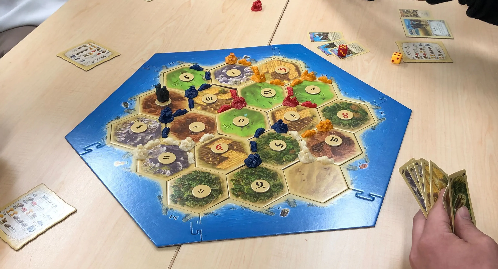
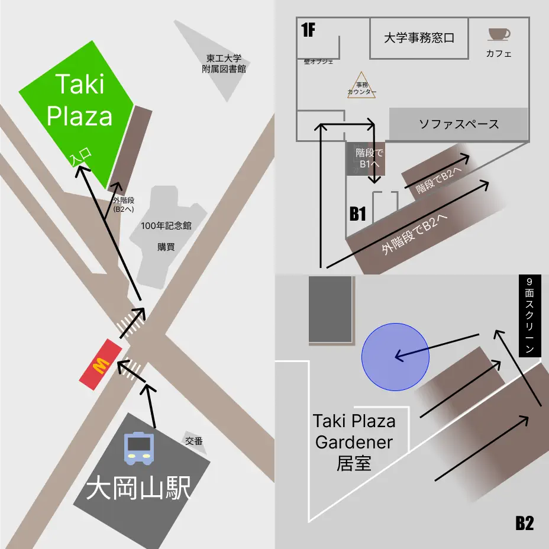

ボードゲームの定番カタンからここでしか遊べないオリジナル
カードゲームまで！！！
TPGスタッフがルールを丁寧に説明します！
おひとりさま大歓迎！

ー 遊べるボドゲ ー
◆カタン
◆オセロ
◆音速飯店
◆UNO
◆タッソサファリ
◆花火 / HANABI
◆おばけキャッチ
◆TPGオリジナルカードゲーム
「素数竜王」
etc....
コーヒーゼリー
キムワイプ卓球で疲れた体にしみるコカ・コーラ
などたくさんご用意しております。
〜 メニュー 〜
◆コーヒーゼリー(アイストッピング)
各種ソフトドリンク
◆コカ・コーラ
◆三ツ矢サイダー
◆オレンジ
◆マックスコーヒー
※ワンドリンク制
・正門より徒歩1分
・緑ヶ丘門より徒歩8分
・石川台門より徒歩7分
Hisao & Hiroko Taki Plaza
地下2階 イベントスペース
正門前の新しい木造建築の建物です。
